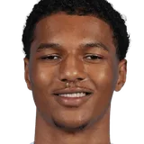

Played 1 season for 1 team; his teams went 3–16 in his games.
Jump to: Record by opponent · Season by season · Teammate help
Compare Julian Reese with…
Final NBA finish, season by season
Title Finals Other playoffs Missed playoffs. #1 = champion; the dashed line is last place that season. Each point opens that season's final standings.
All 30 teams ranked in 2025-26, his best finish (#30)Teammate help
No honored teammate in any season: help 0.
Career
Career records (W–L, W − L, with and without) include 2026-27 games through Nov. 23, 2026; season counts and finishes are through 2025-26. Each card opens its board in the same scope. How we count.

Latest completed seasons
- 2025-26·
 Washington·#30 of 3017–65 · Missed playoffs
Washington·#30 of 3017–65 · Missed playoffs
2026-27 so far
Games through Nov. 23, 2026, the last game in the nightly data. These games are already in his career records above (W–L, win %, W − L, with and without, all marked "incl. 2026-27"). Season counts, final finishes and teammate help use completed seasons through 2025-26; 2026-27 joins them when the season ends.
| Team | His games | With him | Without him | Gap | On/off per 100 | Started / bench | Close games |
|---|---|---|---|---|---|---|---|
| 6 | 2–4 33.3% | 3–10 23.1% | +10.3 | −11.0 | N/A / 2–4 | N/A |
Season by season
Newest first; every header sorts. Final NBA finish is the team's rank among all teams that season (#1 = champion) and opens that season's standings. "Without him" uses the team-season window; the span line counts only the games between his first and last game for the team. The 2026-27 (to date) row counts games through Nov. 23, 2026; its final finish and playoffs are in progress.
| 2026-27 (to date) | In progress | 5–14 26.3% | In progress | 6 of 19 | 2–4 33.3% | 3–10 23.1%span: 2–2, gap −16.7 | +10.3 | |
| 2025-26 | #30 of 30 | 17–65 20.7% | Missed playoffs | 13 of 82 | 1–12 7.7% | 16–53 23.2%span: 0–10, gap +7.7 | −15.5 |
On/off, starts and close games
From the lineup data, 1996-97 on, incl. 2026-27 through Nov. 23, 2026. On/off is net points per 100 possessions with him on the floor minus off, a different unit from the win-rate gaps. Started and off the bench are team records in those games; close games are those within 5 points in the last 5 minutes with him on the floor.
| 2026-27 (to date) | −11.0 | N/A | 2–4 33.3% | N/A | |
| 2025-26 | +0.6 | 1–9 10.0% | 0–3 0.0% | 0–2 0.0% |
Teammate help by season
Help this season = Teammates Score points for honors won that season by teammates who shared a game with him, with every teammate that adds to it. Only honors won in that same season count. How help works.
- 2026-27
 New OrleansHelp this season: pending (honors are awarded after the season)
New OrleansHelp this season: pending (honors are awarded after the season) - 2025-26WashingtonHelp this season: 0, no honored teammate
Record against each opponent
Regular season, incl. 2026-27 through Nov. 23, 2026: 19 games, 3–16, against 13 franchises.
Grouped by franchise (named as today); game lists keep each team's name that season. Filters and the tab are kept in the URL, so a filtered view can be shared.
| Games list | |||||||
|---|---|---|---|---|---|---|---|
| 3 | 1–2 | 33.3% | −1 | N/A | 2025-26 to 2026-27 | ||
| 2 | 0–2 | 0.0% | −2 | N/A | 2025-26 to 2026-27 | ||
| 2 | 0–2 | 0.0% | −2 | N/A | 2025-26 | ||
| 2 | 0–2 | 0.0% | −2 | N/A | 2025-26 | ||
| 2 | 1–1 | 50.0% | 0 | N/A | 2025-26 | ||
| 1 | 1–0 | 100.0% | +1 | N/A | 2026-27 | ||
| 1 | 0–1 | 0.0% | −1 | N/A | 2025-26 | ||
| 1 | 0–1 | 0.0% | −1 | N/A | 2025-26 | ||
| 1 | 0–1 | 0.0% | −1 | N/A | 2026-27 | ||
| 1 | 0–1 | 0.0% | −1 | N/A | 2026-27 | ||
| 1 | 0–1 | 0.0% | −1 | N/A | 2025-26 | ||
| 1 | 0–1 | 0.0% | −1 | N/A | 2025-26 | ||
| 1 | 0–1 | 0.0% | −1 | N/A | 2025-26 |
Rows add up to his career record in his games. A playoff series counts when he played in it; early round-robin games show as games only. How we count.
Arrival and departure
Team wins per 82 games the season before he arrived vs his first season there, and his last season vs the season after he left. He leaves a team only when his next season with games is for another team (or he never plays again); whole seasons he missed and came back from are one "Missed" row with the team's record without him. Per 82 so short seasons compare fairly. These are team records, not a measure of what he did.
| Debut | 2025-26 | 2024-25: 18–64 18.0 per 82 | 2025-26: 17–65 17.0 per 82 | −1.0 wins |
With and without his teammates
His 12 teammates with the most regular-season games together. "Together" is the team's record in the games both played for it; "Without him" is the team's record in the games Julian Reese played for that team while the teammate was on it (between the teammate's first and last game for the team, the appearance span) and the teammate did not play. Fewer than 20 games without him: no gap. Games through Nov. 23, 2026. How we count.
- Sharife CooperWashington 2025-26
- Together
- 1–12 7.7%
- Without him
- N/A N/A
- Gap
- Too few games without him
 Carlton CarringtonWashington 2025-26
Carlton CarringtonWashington 2025-26- Together
- 1–12 7.7%
- Without him
- N/A N/A
- Gap
- Too few games without him
 Will RileyWashington 2025-26
Will RileyWashington 2025-26- Together
- 1–12 7.7%
- Without him
- N/A N/A
- Gap
- Too few games without him
 Anthony GillWashington 2025-26
Anthony GillWashington 2025-26- Together
- 1–10 9.1%
- Without him
- 0–2 0.0%
- Gap
- Too few games without him
 Leaky BlackWashington 2025-26
Leaky BlackWashington 2025-26- Together
- 1–10 9.1%
- Without him
- 0–2 0.0%
- Gap
- Too few games without him
 Bilal CoulibalyWashington 2025-26
Bilal CoulibalyWashington 2025-26- Together
- 1–9 10.0%
- Without him
- 0–2 0.0%
- Gap
- Too few games without him
- Jamir WatkinsWashington 2025-26
- Together
- 1–9 10.0%
- Without him
- 0–3 0.0%
- Gap
- Too few games without him
 Jaden HardyWashington 2025-26
Jaden HardyWashington 2025-26- Together
- 1–8 11.1%
- Without him
- 0–4 0.0%
- Gap
- Too few games without him
 Justin ChampagnieWashington 2025-26
Justin ChampagnieWashington 2025-26- Together
- 0–7 0.0%
- Without him
- 1–5 16.7%
- Gap
- Too few games without him
 Saddiq BeyNew Orleans 2026-27
Saddiq BeyNew Orleans 2026-27- Together
- 2–4 33.3%
- Without him
- N/A N/A
- Gap
- Too few games without him
 Herb JonesNew Orleans 2026-27
Herb JonesNew Orleans 2026-27- Together
- 2–4 33.3%
- Without him
- N/A N/A
- Gap
- Too few games without him
 Karlo MatkovicNew Orleans 2026-27
Karlo MatkovicNew Orleans 2026-27- Together
- 2–4 33.3%
- Without him
- N/A N/A
- Gap
- Too few games without him